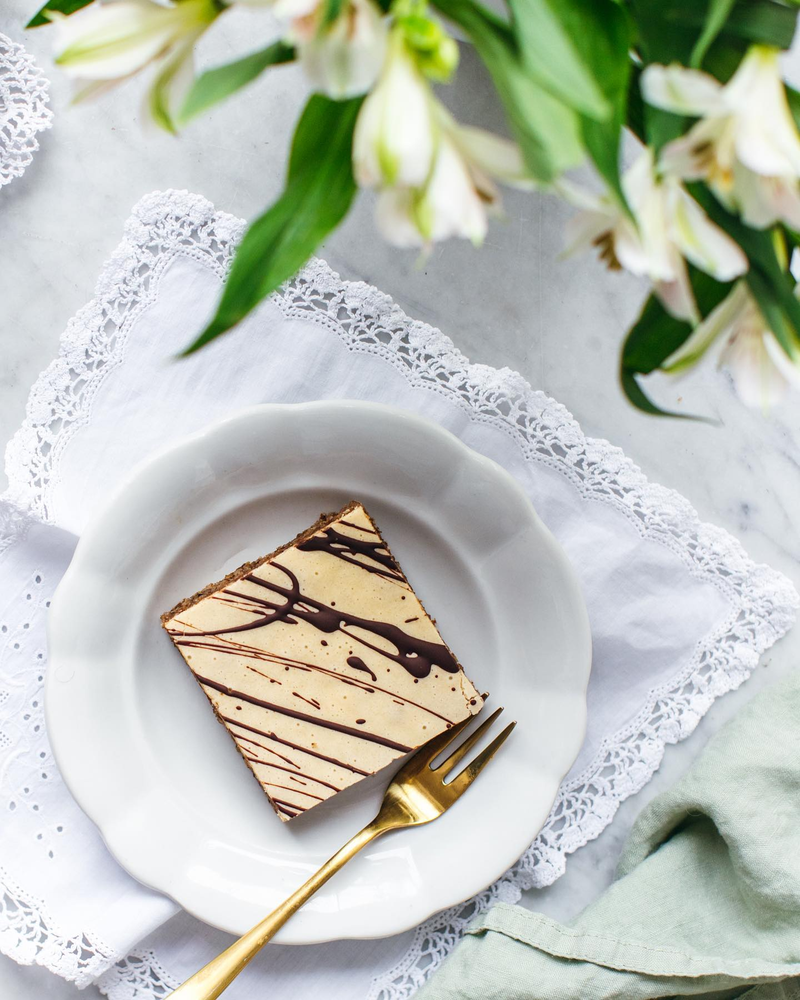

Orechové rezy podľa @lapetit.sk — Normy Jedál
Ani neviete ako sa mi triasli ruky keď som krájala tieto žĺtkove rezy 😂 Mať tak ešte hodinku navyše, prekrojím ich ešte na menšie kúsky. Ale poviem vám, máte sa na čo tešiť. Tým, že sa mi prvá várka nepodarila podľa predstáv, cesto som na druhý pokus ešte vylepšila. Recept bude už čoskoro 🙏🏻
.
.
.
#zltkoverezy #orechoverezy #zakusok #dnespeciem #dnespecu #velkonocnepecenie #velikonoce #tradicnerecepty #bakersgonnabake #myfoodstory #pecenieslaskou #peceniejeradost #novyrecept #foodphotographer #foodphotography #foodstylistlife #alittlegathering #easterrecipes